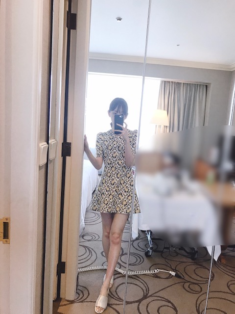

2019/0709Tue三度寝したい
玲香さんの卒業発表がありました。
正直、めちゃくちゃ寂しいです。どんどんメンバーが居なくなってしまうのは、心にぽっかり穴が空いたようで。
でも、玲香さんの次なる道を応援したいし玲香さんが決めたことだからわたし達メンバーが前向きな気持ちで背中を押さないと。ね。
9.1が最後ということでそれまでたくさん玲香さんの背中を見ていろんなことを吸収したいし一緒に思い出も作りたいです。
大好きだからこそ、残された私達が前向きに、強く居ないと。
玲香さん、最後までよろしくお願いします（ ; ; ）
最高のキャプテンです！
上海の思い出写真載せますね
焼き餃子とか焼き小籠包とか北京ダックとか
たくさん食べましたー。


one-piece...saint laurent
shoes...3.1 Phillip Lim

韓国で買ったワンピース
かわいい形のワンピースを夏はたくさん着たいなあ
ロマンティック気分で過ごしたい
この間メイクさんにね、
みおなちゃんは絶対前世どこかの国のお姫様だったよね
といわれたので
あ、わがままなのがバレてしまったと思ったら
まさかの
"品があるからだよ"と言っていただいたんです
最高の褒め言葉
う、うれしい、、、
確かにね、異常にお茶や紅茶が幼い頃から好きで食器や茶葉にもこだわっていたし、しかもなぞに丁寧に淹れて飲むのにもこだわっていたし、紅茶のおともはクッキーだし、読む本は外国の物語のが好きだし、やはりどこかマイペースというかわがまま気質だし、パジャマの質とかわいさにこだわりが強くて季節毎にコロコロ違うの着たがるし、でもなんだかんだシルク素材のパジャマが好きだし、今はプライベートスプーンズクラブのパジャマを1年くらい愛用してるし、姿勢とナイフフォークの使い方だけは昔から褒められるし、ドレスやキラキラのアクセサリーやティアラやヒールやバッグが大好きだし、白馬に乗った王子様がいつか私を迎えにきてくれると信じているから(みんなにはまた始まったよといわれるけど言い続けます)
前世かそのまた前世は、小さな自然豊かな国のお姫様だったらいいなぁ うふ ウフフ
女の子は一度はプリンセスに憧れるよね！


そういえば、質問受け付けておいてまだこたえられてなかった！
オフができたらバーッとこたえます！！
しばらく待たせちゃうかもです...
ごめんなさい...
では、またね☺︎
私は撮影行ってきまーす
ちょい寒いけど田舎で空気が綺麗なので生き生きとしてます。
2019/07/09 20:12


コメント(356)
玲香の卒業のダメージが腰にきてます。ヨロヨロ。あっ、先に言っとくけど未央奈は卒業しちゃダメだよ。まだ、会ってもいないんだからね。絶対ダメ。ダメです。
で、お姫様。ん、そんな気がしてました。
じゃ。
昨日の玲香ちゃんの卒業発表はとても衝撃的で、寂しさでいっぱいです。メンバーのみんなにとってもキャプテンは大きい存在だったと思うし…前向きに受け入れようとしている気持ちが文面から伝わってきました(;_;)
昨日の755での未央奈ちゃんの言葉に救われたファンは沢山いると思う…！9月1日まで乃木坂46の玲香ちゃんのことを悔いなく応援していきたいな、未来を嘆くより今を大切にしたいなと思いました。
上海のお写真やTVBrosのオフショット沢山アップしてくれて嬉しい⸜(*ˊᵕˋ*)⸝とっても可愛い！
私も未央奈ちゃん品があって素敵だな〜って思うこと沢山あるよ！
姿勢がいいし食べ方もキレイだしお辞儀とかちょっとした仕草がキレイで可愛いなって思います︎☺︎ワンピースやドレスっぽい歌番組の衣装やキラキラカチューシャがとっても似合うし♡
忙しいのに質問返ししようとしてくれてありがとう！その気持ちだけできっとファンはとっても嬉しいです︎☺︎楽しみにしてます！
田舎での撮影頑張ってね！
楽しい時も辛い時もみんなをまとめて
乃木坂をここまでもってきた功労者やー
玲香FOREVER
てか、また始まったよ笑笑
俺、前世王子様だったけど馬乗れない...
でも言われてみると堀ちゃん
ヨーロッパあたりの
お姫様だった気がしてきた！
堀ちゃんの全体的の雰囲気がなんとなく
けれど俺、馬乗れません...
質問は急がなくていいよー
答えれる時に答えてねっ
めちゃくちゃ美脚な掘氏にオススメの体型維持法とか普段から気を付けてること教えてほしいです！
玲香ちゃん卒業発表したね。
すごく寂しいね。
いっぱい思い出作れると良いね。
未央奈ちゃんすごく可愛い(//∇//)
全然わがままじゃないよ。
前世どこかのお姫様だと良いね(*^^*)
未央奈ちゃんのお姫様見てみたいな～(≧∇≦)
未央奈ちゃんのマイペースなところとか、
全部大好きだよ(≧∇≦)
質問楽しみに待ってるね♪
全然焦らなくて大丈夫だよ(*^^*)
撮影頑張ってね！
体調崩さないように気を付けてね。
またね♪
未央奈ちゃん神推し
秀喜より！(≧▽≦)
でもみおなちゃんが言ったように私も前向いてれいかちゃんを乃木坂のみんなをこれからも応援します！
上海で餃子、小籠包、北京ダックに羨ましいな。
田舎での撮影、楽しみですね。
これからも、応援、し続けます。
金曜日に友達とホットギミックス見に行ったんだけど、
友達が、この子かわいいって言ってたよ(^｡^)
やっぱり私が自慢するだけある（誰様）
最近ほんとにほんとにもっと可愛くなったし、755とかモバメで沢山話してくれるファン思いだし、最高です
個握取れなかったんで全握行きたいんですけど、ミオナちゃん人気すぎて、並ぶ勇気ないです。でも会いたい(^｡^)
ライブ、すっごい良かったよー〜！(^｡^)
大好き♡
わかったか
堀ちゃんは、皆んなの憧れのプリンセスだよ！
堀ちゃんには、気品と美しさ、そして優しさが
溢れているから！
だから遠慮しないで、堂々と言ってね！
堀ちゃん、大好きだよー
美脚すぎる
いつかお姫様になってみたいよね
未央奈ちゃんやったらなれる！
王子様がむかえにきてくれたらいいね
いつも頑張ってるから褒められてるんだよ。
体調管理ねー。
よし！俺の勝ち！ 「 You lose！」
どうして負けたのか明日までに考えてください。
ほな！おやすみなさい！ ｽﾔｧ～、、、
上海よかったね！かおなしと一緒に写ってるやつ本当に好き～
あと、ワンピースの写真見て思ったけどめっちゃ美脚！！(゜ロ゜ノ)ノ
スタイル抜群だね！羨ましい。
オフショットメイク好き～ 髪結んでるのめっちゃ可愛い( ≧∀≦)ノ
れいかちゃん卒業発表したね。 れいかちゃんと沢山思い出作ってくださいね。
( ・ω・)∩質問(遅くなった)
堀ちゃんオススメのアイスあったら教えてください。
またね
キャプテンの卒業は寂しいけど、
れいかさんは素敵な女性ということは
変わりないし、これからもずっと
陰ながら応援しようと思う︎☺︎
最高のライブにしようね( ˶˙ᵕ˙˶ )
ネコバスに乗ってる未央奈ちゃん
めっちゃ可愛い〜( ⸝⸝⸝¯ ¯⸝⸝⸝ )♡
プリンセスな未央奈ちゃん素敵。
ガラスの靴をぜひ履いて欲しいな〜
すっごく似合ってて綺麗なんだろうな〜♡
玲香が卒業しちゃうね〜
めっちゃ寂しいわ〜
玲香の分まで頑張らんとね！未央奈がんばれ！
ワンピースめっちゃ可愛い！
未央奈大好き！
こんばんはっ！
今日は少し肌寒いくらいの気温だったね
夏はまだ遠しなのかな
昨日、玲香が乃木坂からの
卒業を発表しました
あ〜遂に、この日がきたのか
っていう想いです
玲香が乃木坂で果たした役割は
計り知れなくて
きっと、他の誰にも
真似の出来ないこと
なんというか、
どんな困難にぶつかっても
玲香がいればどうにかこうにか
進んでいける
そんな安心感のある
乃木坂のキャプテンだったよね
って過去形になってるけど
まだ9/1まで時間はあるし
それまで精一杯応援したいと思います
道標になると彼女は言いました
玲香が歩むこの先の道が
乃木坂の未来を照らす光と
なりますように
自分も三度寝したーい！
今日は朝から「ホットギミック」と「いつのまにか、ここにいる」を連続で見に行きました♪♪
ホットギミック,始めは独特な世界観でちょっと理解に苦しみましたが時間が経つにつれ,楽しめました！
ドキュメンタリーは乃木坂が更に好きになりました！
いつも感動をありがとーm(_ _)m
ホットギミック見てから堀ちゃんが私の中で急上昇中です！
玲香ちゃんの次のキャプテンには、堀ちゃんに1票です！
それでは～( ^ω^ )//
だってキラキラしてるもん。
高校生の３つの恋愛パターンが描かれてて何回でも観たくなる映画だったよ。
最後に、寒暖差で夏風邪引かない様に気をつけてネッ。
ほんとうに玲香キャプテンの卒業は心にぽっかり穴があきそうだね。でも、玲香さんのこれからのさらなるご活躍を応援していきましょう。
卒業は寂しいですが喜ばしいことと思います。
僕の生き甲斐です
乃木坂でも個人の仕事でも頑張ってください！
桜井玲香ちゃんの卒業が発表されましたね。
キャプテンとして、表からも裏からも乃木坂を支えてきた人。
もちろん、その屋台骨が抜けてしまうのは大きなことだけど…
未央奈が言うとおり、玲香ちゃんが安心して卒業できるよう、逞しいところを見せて、背中を押してあげたいですね‼︎
未央奈なら、それができると思います♪
また、755で未央奈がコメントしていたように、しばらくはキャプテン不在というのもアリかもしれません。
今の乃木坂なら、そういう肩書きの人がいなくても、全員でしっかりとまとまることができるような気もするし。
いずれにせよ、まだ9月1日まで時間があるし、それまでの時間を大切に、全力で走り抜けたいですね‼︎
それまで、桜井キャプテン率いる乃木坂46をしっかりと応援したいと思います♪
ところで、未央奈、前世は小国のお姫様だったんですね。
どうりで、何とかこの子を守ってあげたいと思うわけだ(笑)。
自然豊かな小国ってどこだろう？
カリオストロ公国？(笑)
そういや、ちょっと面影あるなあ。
上海でも、油屋の前で写真を撮ったり、ネコバスに乗ってみたり。
未央奈は海外でもジブリ三昧ですね♪
もしかすると、カリオストロ公国王女としての血が騒ぐのかもしれませんね(笑)。
いつか、貴方の心を盗む泥棒さんになりたいなあ。
ちなみに自分も、前世、又は前前前世、白馬の王子様です。
きっと、これもまた『結び』ですね(笑)。
いつか迎えに行きますので、よろしくどうぞ♪
そうそう、質問返しは、焦ることないですよ。
ゆっくりと、時間がある時にご対応ください‼︎
こちらもゆっくりとお待ちしてます♪
ではでは、また。
明日も未央奈にとっていい1日になりますように♪
玲香ちゃん悲しい。卒業は本来おめでとうって言わないとあかん事なんやけどね。
9月1日におめでとう。って言えるようにします！
ワンピース似合ってて可愛い（＾ω＾）
ホンマにその通りやと思うわ！
すごい、お上品で、可憐で、儚い。ドレス衣装とか着てるの見たらもう完全にお姫様やもん。
お仕事頑張れーー！
できれば、別れは減らしたいものですが、出会った数だけ別れは必ず訪れるので、無理なんですよね。
(´・_・`)
20時過ぎから撮影なんですか？
大変ですね。
風邪引かないように、喉を痛めないように気をつけて下さいね。
メンバーの卒業は、寂しいですね。
撮影頑張ってくださいね。
待ってるね！！！！
前前前世は間違いなくお姫様ですよ！
桜井さんの卒業発表は、驚きとショックでしたが、堀さんにとってはかなりの想像を絶するインパクトだったのでしょうね。
人柄と存在感で人を惹きつける方ですから、当然悲しみはこの上ない事かと。
でも、次世代の乃木坂の為の道標となるべくの決意もあるとの事で、悲しんでいては旅立てないので、言われる通り背中を押してあげないとです。
それまで最後のライブまで、瞬間瞬間を大切に。その背中を焼き付け存在を享受されて下さい。
韓国で買ったワンピースのシルエットが凄いです。
足は長いし綺麗だし、全体も細いでし。
メイクさんの堀さんの前世はお姫様の話ですが、分かります。
自分は、東欧かその近辺かのお姫様か高名な貴族かのように感じてます。
質問返しは気長に待ってます。
田舎の空気、羨ましいです。
東京で現在19度でやや冷んやりですが、冷え過ぎないで下さいよ。
終わったら、温かい湯舟に浸かれると良いですが。
頑張って行きましょう！
キャプテンとの活動期間、大事にね！
それにしても卒業発表にはビックリしたなぁ
上海の写真アップもありがとう！
自分はいつか誰かの白馬の王子さまになれたらいいなぁ笑
可愛いし綺麗だから❤️
卒業は寂しくなるけど、今後の活躍に後押ししていきたいね！
お姫様もありだけど、令嬢であったのかもしれないね
質問に答えてくれることを期待して待ってるねー
今晩は!未央奈ちゃんブログ更新ありがとうございます!
玲香ちゃんの卒業が寂しいのは俺も全く同じ気持ちです!先輩メンバーがどんどん居なくなくなるのは辛いですよね。しかしながら、何れにせよ卒業する日必ず来るんですよ!抜けた分は他のメンバー皆でフォローするのが当たり前の事ですし、後輩達に刺激を与える事だと俺は思います!
話を変えますけれども、岐阜出身の未央奈ちゃんが知っているかどうかは知りませんけれども、名古屋鉄道のパノラマカー若しくはパノラマスーパーって知っていますか？
それではお休みなさい!
衣装とても似合ってますよ＼(^-^)／
撮影頑張って下さい
未央奈の玲香への思い凄い伝わった。感動。
みおながいてくれたら玲香もきっと安心して卒業出来ると思う…！！
今でも私にとって未央奈は最高のお姫様
玲香の卒業でだいぶメンタルやられてたけど未央奈の可愛いブログ見てメンタル回復中。。☺︎
みおなほんとにすきだよ。
玲香さんの卒業にビックリしてます！！
寂しくなりますが優しく
後押ししてあげましょうね(^_^)
上海の思い出写真ありがとうございます！
笑顔でピース最高です
未央奈さんの笑顔に
いつも元気もらってます
ワンピース姿とても似合ってますよ～
そうそう
紅茶のおともはクッキーですよね～
紅茶大好きです
ティータイムは気分が落ち着きます
白馬の王子様
きっと現れますよ(^_^)
本当にキャプテンの卒業はファンみんなびっくりしたよ〜
僕も心に穴が空いた感じになったよ〜〜〜
真夏のライブは行けないけど、最後の最後まで玲香ちゃんとの思い出を作ってねー！またその時の写真待ってるよー！！
体調だけは崩さないようにね！！
ではまた！！
コメントする